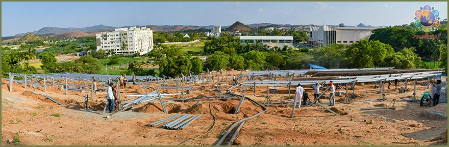
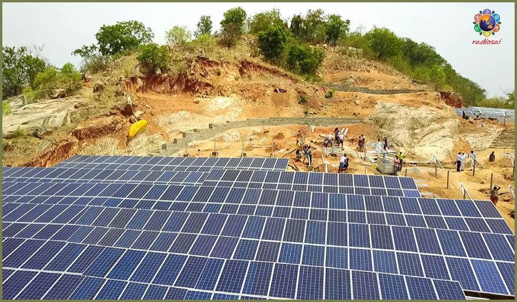
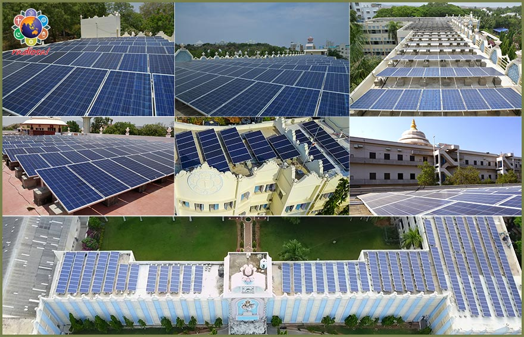
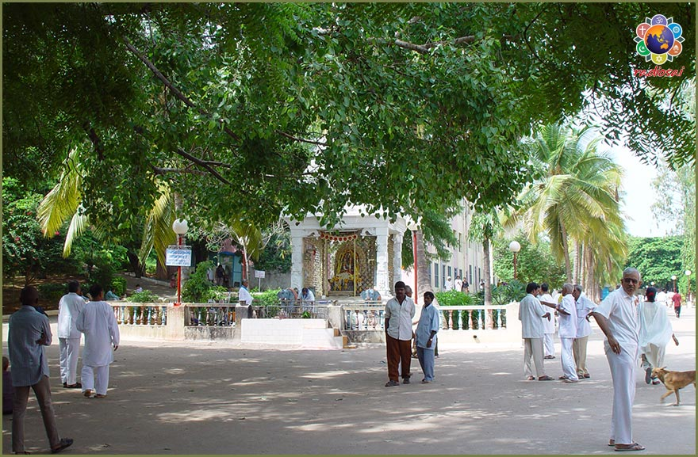
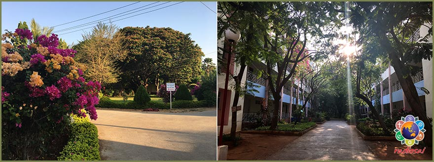

In January 2017 the hospital took another ‘green leap’ and set up its own 100 KW solar power plant. In 12 months it generated 1,40,000 units of energy.
“Our power consumption bill used to be close to 2.6 crores annually. The government gave us subsidy up to 2 crores as this is a completely charitable hospital, but we still had to pay 50-60 lakhs. Now with the installation of this power plant, we are saving 50 lakhs every year,” explains Praveen, special assistant to the Director.
Recognising the charitable work of the hospital, the government recently raised the subsidy to 3 crores to maybe offset the rising power tariffs. The hospital is now fully covered power-expenditure wise, still this has in no way diminished its zeal to go for clean energy as well as conserve every bit it can.

On a war footing it replaced its entire lighting system with 3000 LED tube lights, thus bringing down the lighting power load by 60%. This has led to Rs 50,000 worth of power consumption saved every month.
Similarly, it changed the motors and the ducting of its air-conditioning system which reduced the power requirement of the ICUs by 40%.
Thanks to these little steps, the hospital has been amply ‘green rewarded’ – it saves up to 10,000 units of energy every month which is close to 70,000 rupees.
Its renewable energy production and its power conservation measures has prevented 127.5 tons of carbon emission into the atmosphere.
SSSIHMS-BLR indeed is the first hospital in Bengaluru to embrace the light of the Sun to light up its wards and theatres. It is also the first hospital in Karnataka to have a 100 KW solar plant.
Buoyed by the tremendous success of the Solar project in SSSIHMS-WF, the Sri Sathya Sai Central Trust in 2018 set up a project which was 10 times bigger.
This was a 1 MW (1000 KW) solar plant for this hospital’s sister institution – the Sri Sathya Sai Institute of Higher Medical Sciences in Puttaparthi.
It indeed was a heartening moment of this institution. “Ask anybody in the hospital today about this initiative and the first thing they say is that they feel so proud! They are excited that we have gone green,” says Mr Rajesh Desai, Executive Engineer of the hospital.


“Every rupee we save can go towards treating another desperate soul,” explains Mr Desai and elaborates, “Our power bill used to be 3.6 crores annually. Now we have reduced it by one-third. We save 1.6 crores every year presently.
“But this is not all. We are further augmenting our solar plant to double its capacity. Probably by early 2019 we would have gone 100% solar. That truly would be one of the brightest moments in the hospital’s 27-year old history!”
The hospital still has enough space on its roof to accommodate panels for another 500 KW. Plus it has ample arid land. Even though roof-top installations are common, in this case there was a problem. The Trust had spent a lot of money making the roof weather-proof but generally solar panel installations are penetrating-type.
“When I saw the protective layer on the roof, I had no heart to puncture it,” says Mr Ravi Chandra, the engineer from Mytrah Energy Pvt Ltd, which executed the project. So they came up with a site-specific design wherein you don’t drill the roof and put a bolt to fix the panel, but create a ballast structure, cast it down and then anchor the panels on top of it.
“This was an interesting innovation. You will not see it anywhere else in India,” confirms Mr Ravi.
A greater hurdle awaited Ravi and the Trust engineers when they decided next to build an 800 KW solar plant for meeting the power needs of the new scientific edifice in Puttaparthi – the Central Research Instruments Facility.
While panels for 350 KW could be accommodated on roof surfaces of various structures, another 450 KW had to be done on the ground. “The Trust has land but that is covered with greenery and cultivation, and we did not want to cut a single tree,” recalls Mr Rameswar Prusty, Head of Engineering, Sri Sathya Sai Central Trust.
That is when the Trust hit upon the idea of converting the hillock behind the Research Facility into a solar farm. It was a barren and rocky surface with no vegetation but it had a steep 45-degree slope. The solar panels however need a 15-degree slope.


So the Trust took this up as a challenge to mould that hill into three tiers with solid retaining walls so that at every level they could set up one set of panels with the right inclination needed. It was 21 days of hectic earth work and another 21 days of diligent mounting of panels.
“When the installation was complete I had a view of it from the top, it resembled a heart. A thrill went down my spine. This indeed is our most beautiful site. It is a lovely signature of His Love,” shares Rameswar Prusty joyously.
Mr Ravi, the solar engineering expert who has been in the industry for more than two decades, excitedly says, “I can confidently say that this is the first time ever where a hill was converted into a solar farm, that too, with a project size of 450 KW. This definitely is a wow moment!”
According to him, what made it possible was not just the desire of the Trust to convert the brown hill into green energy but the commitment they brought to make it happen.
“I saw volunteers making human chains to shift the motors and the rafters on hot summer days. This was moving,” says a visibly touched Ravi.
In fact among the many volunteers of the Trust also was Dr Raghavendra Prasad, a scientist who is the Principal Investigator for ISRO’s Aditya Mission. As a technical advisor for the Trust, he handled the techno-commercial aspects of all its solar endeavours for no charge and travelled at his own expense every weekend from Bengaluru to Puttaparthi to guide these projects.

Going into the project’s technicalities he says, “Even though there are multiple solar technologies, when it comes to commercial scale of production only silicon technology is economically viable. It is matured enough too in terms of efficiency and longevity of the cell itself. Any other material based on organic semi-conductors or organic polymers do not last long once they are exposed to sunlight’s UV radiation. Silicon technology has a minimum lifespan of 25 years.”
It is this longevity of silicon technology which has prompted the Trust to go for solar in all their buildings. Simultaneously a 100 KW plant was set up for Sri Sathya Sai General Hospital and another 200 KW for the Sri Sathya Sai Archives.
As on June 2018, the Sri Sathya Sai Mitra Solar Power Project of the Trust in Puttaparthi alone has 2100 KW (2.1 MW) solar power plants, cumulatively generating 3.5 million units of power annually. The reduction of carbon emission is an impressive 65,000 tons.
The Trust has installed 6667 modules in a total area of 25,000 square metres along with 42 inverters (which convert the DC power into AC).
“We have spent 9 crores for this but we will recover our investment in 5-6 years, after that for another 20 years we will have free power,” explains Rameswar Prusty and adds, “Besides, since we are grid-connected, any excess power we generate goes back to the grid and could help someone else.”
Of late, the favourable policies of the government offer two options to every solar plant that wants to sync with the grid. Once they pass the government’s quality standards, they can either enter into a power purchase agreement wherein the government pays for every unit of energy generated and pumped into the grid. Or they can use the power they generate entirely and pump only the excess to the grid.
“We chose the second option which is called the net-metering model. Basically, what we pump in gets deducted from what we consume from the grid, especially during night or on non-sunny days, and pay only for the ‘net’ power used. If tomorrow we generate more than what we utilise, that could benefit others who need it,” explains Dr Prasad, who is also the Chairman of Renewable Energy Committee for the Department of Science and Technology, Government of India.
Even though he is a member of several academic bodies and has been a professor at the Indian Institute of Astrophysics for decades, for Dr Prasad his biggest credential is that he is an alumnus of Sri Sathya Sai Institute of Higher Learning. “I really cannot put it in words how deeply satisfying this endeavour has been for me. I have done so many projects for the government and other organisations, but none gave me as much satisfaction as this,” he says.
According to Mr Rajesh Desai this project was “nothing but a ceaseless flow of Swami’s grace.” Narrating one particular episode, he says, “There is one incident which I have not shared with anyone till now. The Research Centre solar plant was a challenging one not only for civil and solar engineers but for electrical engineers like me too.
“Since we are connected to the grid, the arrangement with the electricity board is such that once the supply of electricity from them fails for any reason, our solar generation also should pause. This is to avoid any major accidents. If the board has stopped power for any maintenance or repair work, it is important that we don’t pump power back into the station during that period, else the electricians working could get electrocuted.
“The Research centre has two electrical distribution boards, one at the main gate and another behind the building. Some solar power generated go from the rear board to the one in the front. When power from the grid stops, diesel generators take over the front board. At this time, the rear board should stop supply to the front board. However there was no way to ‘intimate’ the rear board about the front board moving on to generator and that it should pause supplying power. If it didn’t do that, the power it sends will go to the diesel sets and could even blow them up. So establishing this communication and synchronisation between these two boards based on uncertainties of government power supply was a challenge.
“For days together, I was wondering how to solve this. There was one option but it was cumbersome and expensive too. I was praying to Swami for a simple solution. During this time, an expert arrived virtually from nowhere. He came actually to sell something to us. When I asked him about this problem, he suggested a way. I tried that and it worked! It was the perfect solution from all angles.
“Like this, every day you find a hurdle and the next day Swami solves it for you. He has been virtually holding our hand at every step. We only just need to get going.”
Rameswar Prusty who has been at the fulcrum in executing these projects feels “you only have to put in the effort, or rather, I would say He allows you to do that. It is His grace that He gives you an opportunity to be part of His plan. We have to keep thinking of Him and working.
“In fact by 2020, the Trustees want to ensure that not only all major institutions but every building complex of the Prasanthi Nilayam ashram is powered by solar energy. We already have sewage treatment plants to recycle water which are used for our gardens and lawns. We want the entire township to be environmentally clean, fully green and serene.”
 
Mr Ravi Chandra from Mytrah Energy who had no knowledge of the ashram or the Trust’s activities before he got involved in this endeavour, believes the Trust will achieve this sooner than 2020.
This is because he says, “People here are driven by selflessness and this gets rubbed off on anyone who gets associated with them. Working with them, I kept asking myself ‘Am I doing enough?’
“In fact I used to drive the whole night to come to Puttaparthi from Hyderabad and the next morning I would be waiting to get on to the site. It was an extraordinary experience for me. Staying in the ashram too was so rejuvenating. Just two hours of rest in this peaceful environment and I would be fully recharged..
“And as the projects proceeded during completion, I didn’t feel I was working for Mytrah, I felt I was one with a highly inspired team which is determined to make a positive difference to society.”
This is not just Ravi Chandra’s story. Mahesh Kumar, another senior engineer and new to the ashram, says, “There was never a moment when we lacked motivation because if something disappointing happened the team from the Trust always said, ‘It is Swami’s work, it will happen. No need to worry’, and soon things would fall into place.
“For me, being involved in this project was not like working for a company, it was like working for God! We were not executing a project, we were on a divine mission.”
It is beautiful to see that the Solar project has not only harnessed the power of the Sun to light up buildings and institutions in Prasanthi Nilayam but also, just how Swami would want it, has harnessed the power of goodness within many hearts to help in creating a society where selflessness receives prominence and oneness triumphs over divisiveness.
Sri Sathya Sai Central Trust in its continued effort to go on green had completed the setup of the following Solar Energy Installations:
Here is the split up of the 2700kWp solar plants.
| SSSCT(PRASANTHI NILAYAM) | 1430 |
|---|---|
| SSSCT(PRASANTHI NILAYAM) | 450 |
| SSSIHL(PRASANTHI NILAYAM) | 285 |
| SSSIHL(ATP) | 170 |
| SSSIHL(BDN) | 100 |
| SSSIHL(MDN) | 20 |
| ASHRAM(BDN) | 185 |
| SSS GURUKULAM RAJAMUNDRY | 60 |
| GRAND TOTAL | 2700 kWp |